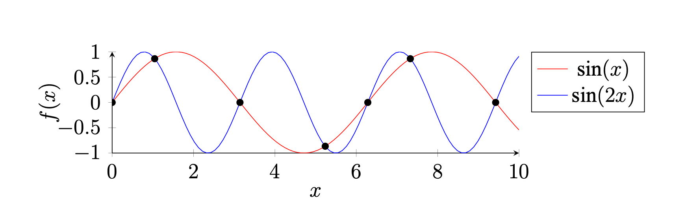

TSM-Net: Progress Report Dec. 24
-
Motivation:
- We want to explain our neural encoder/decoder.
- We want to know how the model maps the seemly random compressed data to various sounds.
- We want to see if our approach conquers the Nyquist frequency (double of the largest frequency). 
-
Method:
- We examine outputs from intermediate layers.
- We analyze the compressed latent vectors.
Audio: {{ audio }}
Encoder
Decoder
Latent vector analysis
Original
Compressed latent vectors
Histogram for latent vectors